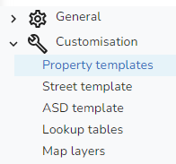
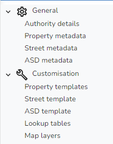

|
The Settings have been split into:
•General •Customisation When you first open the Settings you are taken, by default, to the Property templates.

Clicking on the beside an entry will expand the group and will collapse the group e.g.

General
These settings need to be configured before users can use iManage Cloud to maintain your iManage Gazetteer. Click on the links below for further details on these settings.
•Authority details •Property metadata •Street metadata •ASD metadata Customisation
These settings are to help users to maintain the iManage Gazetteer. The templates and lookup tables are to help users when creating properties and streets and the Map layers allow you to configure the mapping for iManage Cloud.
•Property templates •Street template •ASD template •Lookup tables •Map layers
|